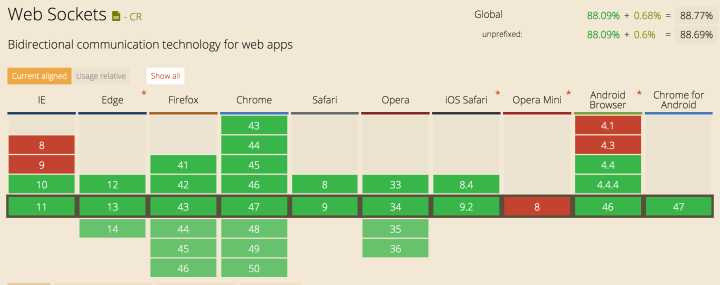

SSE 单向 ；WebSocket双向，意味如果SSE要发信息给服务端，还需新请求 SSE 使用 HTTP 协议，现有的服务器软件都支持。WebSocket 是一个独立协议。 SSE 属于轻量级，使用简单；WebSocket 协议相对复杂。 SSE 默认支持断线重连，WebSocket 需要自己实现。 SSE 一般只用来传送文本，二进制数据需要编码后传送，WebSocket 默认支持传送二进制数据。 SSE 支持自定义发送的消息类型（pb,json==）。 websocket无cookie，header概念，不存在跨域问题
0 1 2 3
0 1 2 3 4 5 6 7 8 9 0 1 2 3 4 5 6 7 8 9 0 1 2 3 4 5 6 7 8 9 0 1
+-+-+-+-+-------+-+-------------+-------------------------------+
|F|R|R|R| opcode|M| Payload len | Extended payload length |
|I|S|S|S| (4) |A| (7) | (16/64) |
|N|V|V|V| |S| | (if payload len==126/127) |
| |1|2|3| |K| | |
+-+-+-+-+-------+-+-------------+ - - - - - - - - - - - - - - - +
| Extended payload length continued, if payload len == 127 |
+ - - - - - - - - - - - - - - - +-------------------------------+
| |Masking-key, if MASK set to 1 |
+-------------------------------+-------------------------------+
| Masking-key (continued) | Payload Data |
+-------------------------------- - - - - - - - - - - - - - - - +
: Payload Data continued ... :
+ - - - - - - - - - - - - - - - - - - - - - - - - - - - - - - - +
| Payload Data continued ... |
+---------------------------------------------------------------+
具体每一bit的意思
FIN 1bit 表示信息的最后一帧
RSV 1-3 1bit each 以后备用的 默认都为 0
Opcode 4bit 帧类型，稍后细说
Mask 1bit 掩码，是否加密数据，默认必须置为1
Payload 7bit 数据的长度
Masking-key 1 or 4 bit 掩码
Payload data (x + y) bytes 数据
Extension data x bytes 扩展数据
Application data y bytes 程序数据
